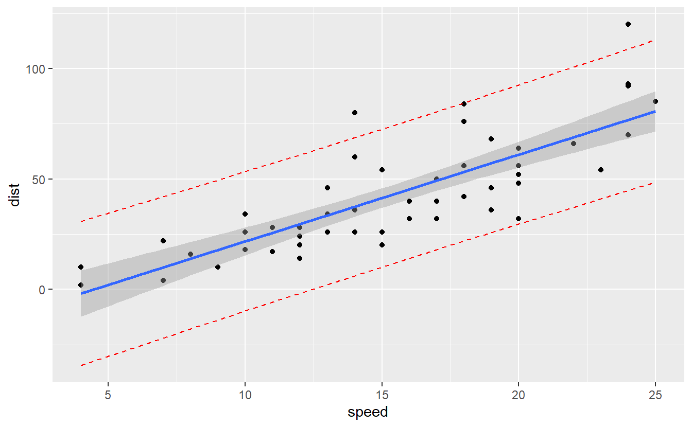

Build a linear regression
data("cars", package = "datasets")
model <- lm(dist ~ speed, data = cars)
model
#>
#> Call:
#> lm(formula = dist ~ speed, data = cars)
#>
#> Coefficients:
#> (Intercept) speed
#> -17.579 3.932
回歸式可以寫成: dist = -17.579 + 3.932*speed.
新資料的預測:distance 分別是:12,19,24
new.speeds <- data.frame( speed = c(12, 19, 24) )
predict(model, newdata = new.speeds)
#> 1 2 3
#> 29.60981 57.13667 76.79872
❓ 不寫newdata ?
Confidence interval
The confidence interval reflects the uncertainty around the mean predictions. To display the 95% confidence intervals around the mean the predictions, specify the option interval = "confidence":
predict(model, newdata = new.speeds, interval = "confidence")
#> fit lwr upr
#> 1 29.60981 24.39514 34.82448
#> 2 57.13667 51.82913 62.44421
#> 3 76.79872 68.38765 85.20978
- fit: 預測值
$$ \hat y $$ - lwr and upr: 95% 信賴區間(confidence)
</div>
speed of 19 -> (51.83, 62.44). This means that, according to our model, a car with a speed of 19 mph has, on average, a stopping distance ranging between 51.83 and 62.44 ft.
Prediction interval
單一值的預測區間(prediction interval)
predict(model, newdata = new.speeds, interval = "prediction")
#> fit lwr upr
#> 1 29.60981 -1.749529 60.96915
#> 2 57.13667 25.761756 88.51159
#> 3 76.79872 44.752478 108.84495
The R code below creates a scatter plot with:
The regression line in blue The confidence band in gray The prediction band in red
data("cars", package = "datasets")
model <- lm(dist ~ speed, data = cars)
# 1. Add predictions
pred.int <- predict(model, interval = "prediction")
#> Warning in predict.lm(model, interval = "prediction"): predictions on current data refer to _future_ responses
mydata <- cbind(cars, pred.int)
# 2. Regression line + confidence intervals
library("ggplot2")
p <- ggplot(mydata, aes(speed, dist)) +
geom_point() +
stat_smooth(method = lm)
# 3. Add prediction intervals
p + geom_line(aes(y = lwr), color = "red", linetype = "dashed")+
geom_line(aes(y = upr), color = "red", linetype = "dashed")
#> `geom_smooth()` using formula 'y ~ x'
